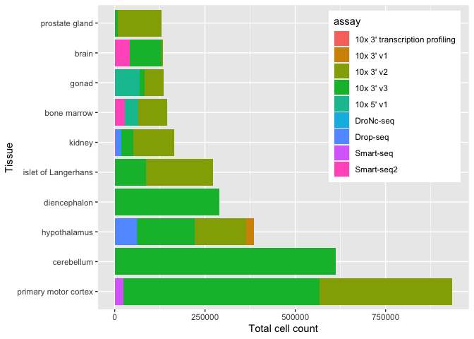
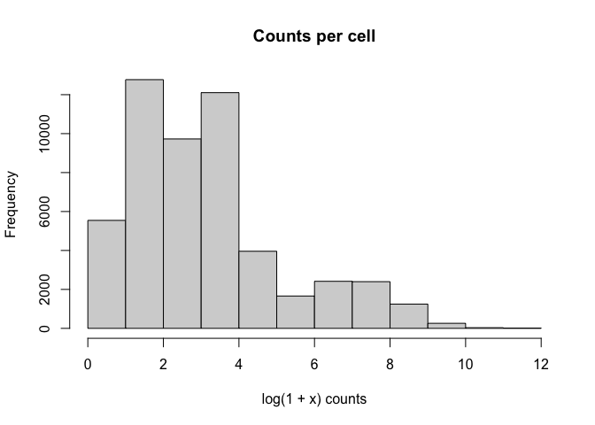

CxGcensus is an alternative R client to the CELLxGENE census. It emaphsizes use cases related to data discovery, and uses in-memory and on-disk caches to reduce latency associated with repeated queries.
Installation
Install CxGcensus from GitHub with:
## install.packages("devtools")
devtools::install_github("mtmorgan/CxGcensus")Data exploration
Load the package
Discover datasets used to construct the census
datasets()
#> # A tibble: 562 × 8
#> soma_joinid collection_id collection_name collection_doi dataset_id
#> <int> <chr> <chr> <chr> <chr>
#> 1 0 6b701826-37bb-4356-979… Abdominal Whit… <NA> 9d8e5dca-…
#> 2 1 4195ab4c-20bd-4cd3-8b3… A spatially re… <NA> a6388a6f-…
#> 3 2 4195ab4c-20bd-4cd3-8b3… A spatially re… <NA> 842c6f5d-…
#> 4 3 4195ab4c-20bd-4cd3-8b3… A spatially re… <NA> 74520626-…
#> 5 4 4195ab4c-20bd-4cd3-8b3… A spatially re… <NA> 396a9124-…
#> 6 5 74e10dc4-cbb2-4605-a18… Spatial proteo… 10.1016/j.cel… e84f2780-…
#> 7 6 74e10dc4-cbb2-4605-a18… Spatial proteo… 10.1016/j.cel… dfdf1ae2-…
#> 8 7 74e10dc4-cbb2-4605-a18… Spatial proteo… 10.1016/j.cel… d1cbed97-…
#> 9 8 74e10dc4-cbb2-4605-a18… Spatial proteo… 10.1016/j.cel… b03e4ef8-…
#> 10 9 6d203948-a779-4b69-9b3… Differential c… 10.1016/j.cel… f1f123cc-…
#> # ℹ 552 more rows
#> # ℹ 3 more variables: dataset_title <chr>, dataset_h5ad_path <chr>,
#> # dataset_total_cell_count <int>dataset_id and collection_id can be used in the cellxgenedp package for programmatic retrieval and visualization of individual datasets.
The organisms present in the census (use these in calls to feature_data() or observation_data()) are available with
census_names()
#> [1] "homo_sapiens" "mus_musculus"Summarize information about cells in the census
summary_cell_counts() |>
filter(category == "sex") |>
select(
organism, label,
unique_cell_count, total_cell_count
)
#> # A tibble: 6 × 4
#> organism label unique_cell_count total_cell_count
#> <chr> <chr> <int> <int>
#> 1 Homo sapiens female 14516846 22513226
#> 2 Homo sapiens male 17097019 28197731
#> 3 Homo sapiens unknown 2145022 3083771
#> 4 Mus musculus female 1066585 1431227
#> 5 Mus musculus male 1655113 2462185
#> 6 Mus musculus unknown 192620 192620Learn about features (genes) in, e.g., homo_sapiens datasets in the census
feature_data("mus_musculus")
#> # A tibble: 52,392 × 4
#> soma_joinid feature_id feature_name feature_length
#> <int> <chr> <chr> <int>
#> 1 0 ENSMUSG00000109644 0610005C13Rik 3583
#> 2 1 ENSMUSG00000108652 0610006L08Rik 2128
#> 3 2 ENSMUSG00000007777 0610009B22Rik 998
#> 4 3 ENSMUSG00000086714 0610009E02Rik 1803
#> 5 4 ENSMUSG00000043644 0610009L18Rik 619
#> 6 5 ENSMUSG00000042208 0610010F05Rik 5226
#> 7 6 ENSMUSG00000020831 0610010K14Rik 1896
#> 8 7 ENSMUSG00000089755 0610012D04Rik 531
#> 9 8 ENSMUSG00000107002 0610012G03Rik 1445
#> 10 9 ENSMUSG00000046683 0610025J13Rik 1121
#> # ℹ 52,382 more rowsObservation (cell) data annotations are available with observation_data(). The strategy adopted is to download all the data to a local duckdb database. Download can be time-consuming, but the results are ‘memoised’ so subsequent calls are more-or-less instantaneous.
mus <- observation_data("mus_musculus")
mus
#> # Source: table<obs> [?? x 21]
#> # Database: DuckDB 0.8.1 [root@Darwin 21.6.0:R 4.3.0//Users/ma38727/Library/Caches/org.R-project.R/R/CxGcensus/39d32a8aa140.duckdb]
#> soma_joinid dataset_id assay assay_ontology_term_id cell_type
#> <int> <chr> <chr> <chr> <chr>
#> 1 0 be46dfdc-0f99-4731-8957-6… 10x … EFO:0011025 mesenchy…
#> 2 1 be46dfdc-0f99-4731-8957-6… 10x … EFO:0011025 mesenchy…
#> 3 2 be46dfdc-0f99-4731-8957-6… 10x … EFO:0011025 mesothel…
#> 4 3 be46dfdc-0f99-4731-8957-6… 10x … EFO:0011025 mesenchy…
#> 5 4 be46dfdc-0f99-4731-8957-6… 10x … EFO:0011025 mesenchy…
#> 6 5 be46dfdc-0f99-4731-8957-6… 10x … EFO:0011025 intersti…
#> 7 6 be46dfdc-0f99-4731-8957-6… 10x … EFO:0011025 mesenchy…
#> 8 7 be46dfdc-0f99-4731-8957-6… 10x … EFO:0011025 mesenchy…
#> 9 8 be46dfdc-0f99-4731-8957-6… 10x … EFO:0011025 Sertoli …
#> 10 9 be46dfdc-0f99-4731-8957-6… 10x … EFO:0011025 mesenchy…
#> # ℹ more rows
#> # ℹ 16 more variables: cell_type_ontology_term_id <chr>,
#> # development_stage <chr>, development_stage_ontology_term_id <chr>,
#> # disease <chr>, disease_ontology_term_id <chr>, donor_id <chr>,
#> # is_primary_data <lgl>, self_reported_ethnicity <chr>,
#> # self_reported_ethnicity_ontology_term_id <chr>, sex <chr>,
#> # sex_ontology_term_id <chr>, suspension_type <chr>, tissue <chr>, …The columns available for cross-dataset analysis are
mus |>
colnames()
#> [1] "soma_joinid"
#> [2] "dataset_id"
#> [3] "assay"
#> [4] "assay_ontology_term_id"
#> [5] "cell_type"
#> [6] "cell_type_ontology_term_id"
#> [7] "development_stage"
#> [8] "development_stage_ontology_term_id"
#> [9] "disease"
#> [10] "disease_ontology_term_id"
#> [11] "donor_id"
#> [12] "is_primary_data"
#> [13] "self_reported_ethnicity"
#> [14] "self_reported_ethnicity_ontology_term_id"
#> [15] "sex"
#> [16] "sex_ontology_term_id"
#> [17] "suspension_type"
#> [18] "tissue"
#> [19] "tissue_ontology_term_id"
#> [20] "tissue_general"
#> [21] "tissue_general_ontology_term_id"It is straight-forward to summarize or query the data, e.g., for the number of different types of assays represented, or for studies of diabetes.
mus |>
count(assay, sort = TRUE)
#> # Source: SQL [9 x 2]
#> # Database: DuckDB 0.8.1 [root@Darwin 21.6.0:R 4.3.0//Users/ma38727/Library/Caches/org.R-project.R/R/CxGcensus/39d32a8aa140.duckdb]
#> # Ordered by: desc(n)
#> assay n
#> <chr> <dbl>
#> 1 10x 3' v3 1925688
#> 2 10x 3' v2 1622998
#> 3 Smart-seq2 221648
#> 4 10x 5' v1 161525
#> 5 Drop-seq 80990
#> 6 Smart-seq 48972
#> 7 10x 3' v1 21421
#> 8 DroNc-seq 2768
#> 9 10x 3' transcription profiling 22
mus |>
filter(grepl("diabetes", disease)) |>
count(disease, sex, tissue)
#> # Source: SQL [2 x 4]
#> # Database: DuckDB 0.8.1 [root@Darwin 21.6.0:R 4.3.0//Users/ma38727/Library/Caches/org.R-project.R/R/CxGcensus/39d32a8aa140.duckdb]
#> disease sex tissue n
#> <chr> <chr> <chr> <dbl>
#> 1 type 1 diabetes mellitus female islet of Langerhans 39932
#> 2 type 2 diabetes mellitus male islet of Langerhans 99747Use ggplot2 to visualize tissue type and assay.
library(ggplot2)
## 10 most-common tissues; total cell count
common_tissues <-
mus |>
count(tissue, sort = TRUE) |>
head(10) |>
collect() |>
pull(tissue)
## assays on each tissue
tissue_and_assay <-
mus |>
filter(tissue %in% common_tissues) |>
count(tissue, assay, sort = TRUE) |>
collect()
## visualize
ggplot(tissue_and_assay) +
aes(x = factor(tissue, levels = common_tissues), y = n, fill = assay) +
geom_bar(position="stack", stat="identity") +
labs(x = "Tissue", y = "Total cell count") +
coord_flip() +
theme(legend.position = c(.8, .7))
The soma_joinid in the tibbles returned by feature_data() and observation_data() are important in retrieving counts.
SingleCellExperiment
To create a Bioconductor SingleCellExperiment, perhaps for use in one of the Orchestrating Single Cell Analysis with Bioconductor (OSCA) workflows, first select desired features and observations. For illustration we choose 100 random genes
set.seed(12)
features <- feature_data("mus_musculus")
random_features <-
features |>
slice(sample(nrow(features), 100))and choose all cells from brain tissue and development stage 20 month old or latter.
observations <- observation_data("mus_musculus")
brain_20mo <-
observations |>
filter(
tissue == "brain",
development_stage == "20 month-old stage and over"
) |>
collect()Cells are from several datasets
brain_20mo |>
count()
#> # A tibble: 1 × 1
#> n
#> <int>
#> 1 52132
brain_20mo |>
count(dataset_id)
#> # A tibble: 5 × 2
#> dataset_id n
#> <chr> <int>
#> 1 3bbb6cf9-72b9-41be-b568-656de6eb18b5 38695
#> 2 58b01044-c5e5-4b0f-8a2d-6ebf951e01ff 3077
#> 3 66ff82b4-9380-469c-bc4b-cfa08eacd325 756
#> 4 98e5ea9f-16d6-47ec-a529-686e76515e39 5180
#> 5 c08f8441-4a10-4748-872a-e70c0bcccdba 4424Use these to create a SingleCellExperiment.
sce <- single_cell_experiment("mus_musculus", random_features, brain_20mo)
sce
#> class: SingleCellExperiment
#> dim: 100 52132
#> metadata(1): census_metadata
#> assays(1): counts
#> rownames: NULL
#> rowData names(4): soma_joinid feature_id feature_name feature_length
#> colnames: NULL
#> colData names(21): soma_joinid dataset_id ... tissue_general
#> tissue_general_ontology_term_id
#> reducedDimNames(0):
#> mainExpName: NULL
#> altExpNames(0):The experiment has counts() as a sparse (dgCMatrix, from the Matrix package) matrix, with features and observations available (as Bioconductor DataFrame objects, rather than tibbles) via rowData() and colData(). The data is straight-forward to work with, e.g., removing features for which no counts were observed…
library(SingleCellExperiment)
keep_rows <- Matrix::rowSums(counts(sce, withDimnames = FALSE)) != 0
table(keep_rows)
#> keep_rows
#> FALSE TRUE
#> 56 44
sce[keep_rows,]
#> class: SingleCellExperiment
#> dim: 44 52132
#> metadata(1): census_metadata
#> assays(1): counts
#> rownames: NULL
#> rowData names(4): soma_joinid feature_id feature_name feature_length
#> colnames: NULL
#> colData names(21): soma_joinid dataset_id ... tissue_general
#> tissue_general_ontology_term_id
#> reducedDimNames(0):
#> mainExpName: NULL
#> altExpNames(0):… or summarizing the total number of reads observed in each cell
hist(
log1p(colSums(counts(sce, withDimnames = FALSE))),
main = "Counts per cell",
xlab = "log(1 + x) counts",
)
Session information
This README was compiled with CxGcensus version 0.0.0.9009. Full session info is:
sessionInfo()
#> R version 4.3.0 Patched (2023-05-01 r84362)
#> Platform: aarch64-apple-darwin21.6.0 (64-bit)
#> Running under: macOS Monterey 12.6.6
#>
#> Matrix products: default
#> BLAS: /Users/ma38727/bin/R-4-3-branch/lib/libRblas.dylib
#> LAPACK: /Users/ma38727/bin/R-4-3-branch/lib/libRlapack.dylib; LAPACK version 3.11.0
#>
#> locale:
#> [1] en_US.UTF-8/en_US.UTF-8/en_US.UTF-8/C/en_US.UTF-8/en_US.UTF-8
#>
#> time zone: America/New_York
#> tzcode source: internal
#>
#> attached base packages:
#> [1] stats4 stats graphics grDevices utils datasets methods
#> [8] base
#>
#> other attached packages:
#> [1] SingleCellExperiment_1.23.0 SummarizedExperiment_1.31.1
#> [3] Biobase_2.61.0 GenomicRanges_1.53.1
#> [5] GenomeInfoDb_1.37.1 IRanges_2.35.1
#> [7] S4Vectors_0.39.1 BiocGenerics_0.47.0
#> [9] MatrixGenerics_1.13.0 matrixStats_1.0.0
#> [11] ggplot2_3.4.2 CxGcensus_0.0.0.9009
#> [13] RcppSpdlog_0.0.13 dplyr_1.1.2
#>
#> loaded via a namespace (and not attached):
#> [1] tidyselect_1.2.0 farver_2.1.1
#> [3] blob_1.2.4 urltools_1.7.3
#> [5] arrow_12.0.1 bitops_1.0-7
#> [7] fastmap_1.1.1 RCurl_1.98-1.12
#> [9] duckdb_0.8.1 digest_0.6.31
#> [11] lifecycle_1.0.3 magrittr_2.0.3
#> [13] compiler_4.3.0 rlang_1.1.1
#> [15] tools_4.3.0 utf8_1.2.3
#> [17] yaml_2.3.7 data.table_1.14.8
#> [19] knitr_1.43 S4Arrays_1.1.4
#> [21] labeling_0.4.2 bit_4.0.5
#> [23] spdl_0.0.5 curl_5.0.1
#> [25] DelayedArray_0.27.5 aws.signature_0.6.0
#> [27] xml2_1.3.4 withr_2.5.0
#> [29] purrr_1.0.1 triebeard_0.4.1
#> [31] grid_4.3.0 fansi_1.0.4
#> [33] colorspace_2.1-0 scales_1.2.1
#> [35] cli_3.6.1 crayon_1.5.2
#> [37] rmarkdown_2.22 generics_0.1.3
#> [39] tiledbsoma_0.0.0.9028 httr_1.4.6
#> [41] DBI_1.1.3 cachem_1.0.8
#> [43] zlibbioc_1.47.0 assertthat_0.2.1
#> [45] XVector_0.41.1 base64enc_0.1-3
#> [47] vctrs_0.6.3 Matrix_1.5-4.1
#> [49] jsonlite_1.8.5 bit64_4.0.5
#> [51] glue_1.6.2 gtable_0.3.3
#> [53] aws.s3_0.3.21 munsell_0.5.0
#> [55] nanotime_0.3.7 tibble_3.2.1
#> [57] pillar_1.9.0 htmltools_0.5.5
#> [59] GenomeInfoDbData_1.2.10 R6_2.5.1
#> [61] dbplyr_2.3.2 evaluate_0.21
#> [63] lattice_0.21-8 RcppCCTZ_0.2.12
#> [65] highr_0.10 cellxgene.census_0.0.0.9000
#> [67] memoise_2.0.1 tiledb_0.19.1.8
#> [69] Rcpp_1.0.10 SparseArray_1.1.10
#> [71] xfun_0.39 fs_1.6.2
#> [73] zoo_1.8-12 pkgconfig_2.0.3